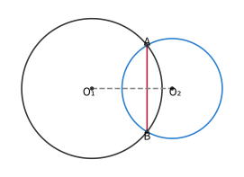
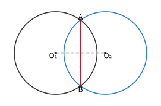
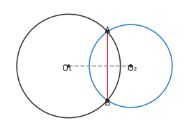

別冊練習問題 7 の解答 2円の共通弦の長さ
(1) 半径 \(7\) と \(5\) の2円があり、中心間の距離が \(8\) で2点 \(A,\ B\) で交わっている。共通弦 \(AB\) の長さを求めよ。
交点の座標
\(O_1(0,0),\ O_2(8,0)\)。共通弦 \(AB\) は \(O_1O_2\) に垂直。交点 \(M\) の位置を \(O_1M=x\) とおく。

2つの三平方
\[AM^2=7^2-x^2=5^2-(8-x)^2\]\[x=\dfrac{8^2+7^2-5^2}{2\cdot8}=\dfrac{11}{2}\]弦の長さ
\[AM=\sqrt{49-\dfrac{121}{4}}=\dfrac{5 \sqrt{3}}{2},\qquad AB=5 \sqrt{3}\]【答案】
\[5 \sqrt{3}\]答
(2) 半径 \(5\) と \(5\) の2円があり、中心間の距離が \(6\) で2点 \(A,\ B\) で交わっている。共通弦 \(AB\) の長さを求めよ。
交点の座標
\(O_1(0,0),\ O_2(6,0)\)。共通弦 \(AB\) は \(O_1O_2\) に垂直。交点 \(M\) の位置を \(O_1M=x\) とおく。

2つの三平方
\[AM^2=5^2-x^2=5^2-(6-x)^2\]\[x=\dfrac{6^2+5^2-5^2}{2\cdot6}=3\]弦の長さ
\[AM=\sqrt{25-9}=4,\qquad AB=8\]【答案】
\[8\]答
(3) 半径 \(10\) と \(8\) の2円があり、中心間の距離が \(12\) で2点 \(A,\ B\) で交わっている。共通弦 \(AB\) の長さを求めよ。
交点の座標
\(O_1(0,0),\ O_2(12,0)\)。共通弦 \(AB\) は \(O_1O_2\) に垂直。交点 \(M\) の位置を \(O_1M=x\) とおく。

2つの三平方
\[AM^2=10^2-x^2=8^2-(12-x)^2\]\[x=\dfrac{12^2+10^2-8^2}{2\cdot12}=\dfrac{15}{2}\]弦の長さ
\[AM=\sqrt{100-\dfrac{225}{4}}=\dfrac{5 \sqrt{7}}{2},\qquad AB=5 \sqrt{7}\]【答案】
\[5 \sqrt{7}\]答